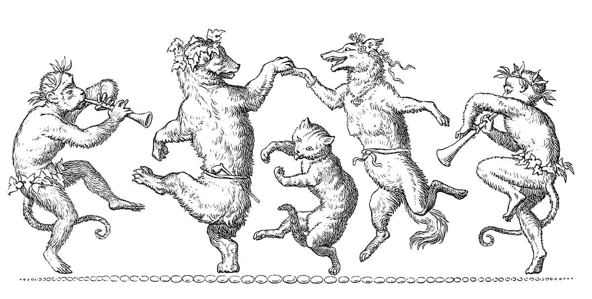
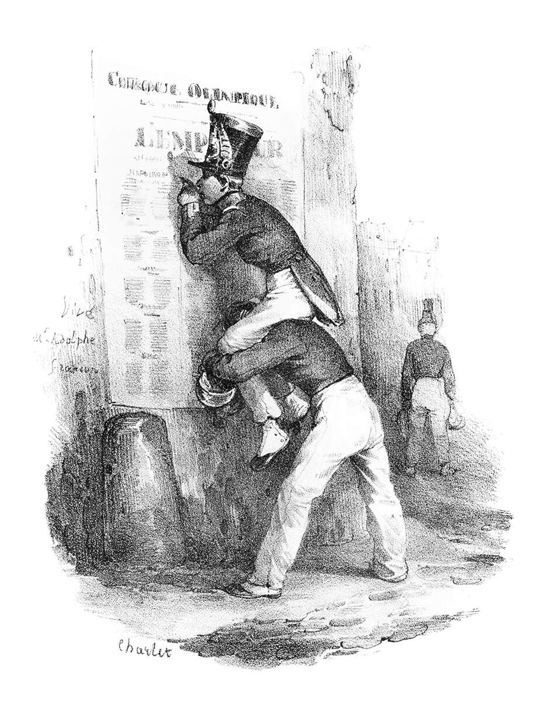

Good morning! Glad to see you made it. I hope you’re ready to wonder
and wander soon.
We’ll be leaving in just a few minutes, as long as the weather
holds…
I hope you’ll wander, rove, saunter, roam, potter, stroll…
But I hope you don’t plan on walking around with your computer open…
Prelude
Journey Start
Like all stories, all journeys have a start. A start of utmost
importance.
As we know, it’s about the journey, not the destination.
And one can think of life as a series of beginnings…
…beginnings that define, at least for some time, how we experience a
part of the journey.
So let us begin the prelude, you and I, preceding and preparing for
the principal matter.
Let us stand up from these tired seats of ours and take a journey.
Yes, I meant it. Put on your shoes and dress and head out the door.
You weren’t created to huddle under the blankets and stay warm.
Where are we going, you ask?
Western Campus. Now quick, there’s no time to explain!
…
Have you left yet?

Good.
I would like our journey to start by wandering towards Patterson
Place. No, not Patterson’s Cafe.
Patterson Place located next to the Western Dining Commons. And
there’s a lovely little path called Slant Walk that crosses S
Patterson Ave to get there.
On the way there, take notice of things you’ve always left
unnoticed. Trace the outlines of various houses, trees, and objects.
See it for what it really is.
Look at it to understand what need it fulfills and in what kind of
world.
Go on. Don’t be afraid to be alone with yourself now.

Bring your attention back to noticing. How long was it supposed to
last? Keep noticing until we arrive.
Ah, have we arrived?
Part One
Patterson Place
Patterson Place. Home to Ol’ James over 100 years ago; now home to
Patterson Place Museum.
Patterson Place. Home to Ol’ James over 100 years ago; now home to
Patterson Place Museum.